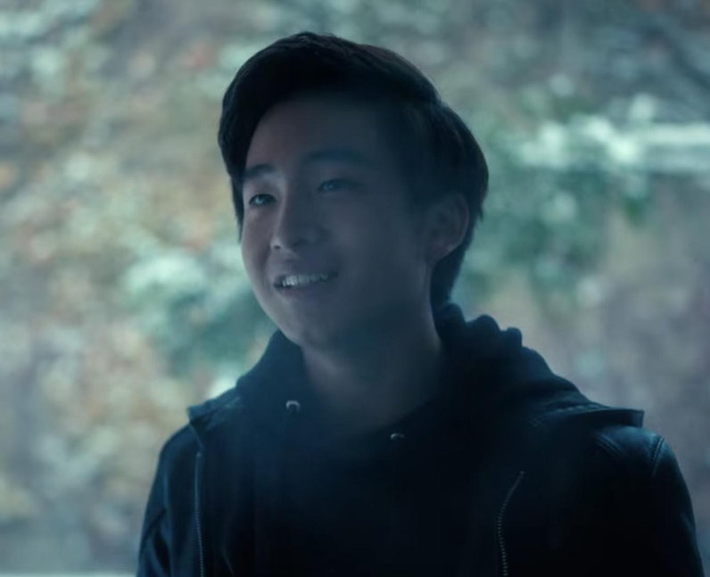

Ben Hargreeves
1989-2006 (-1960)
Number Six
“May the darkness within you find peace in the light.”

Time line of Ben Hargreeves
- 1989 - Born to a woman who was not pregnant before the day began.
- 1989 - Unfortunatley adopted by Reginald Hargreeves.
- 2002 - Killed a whole bunch of people during a bank robbery.
- 2002 - Read a book while Five threw a tantrum and then ran away to the apocalypse. Book was alright.
7/10.
- 2002 - Asked his mom to help him with his zip. Can kill multiple men but cannot zip up his uniform.
- 2006 - Died.
Life After Death
- 2014 - Read another book. Not as good. 2/10.
- 2019 - Agrees with Klaus that they should eat waffles.
- 2019 - Was insulted by Klaus telling him to drop dead.
- 2019 - Wanted to go to the ocean but was outvoted.
- 2019 - Saved Diego's life but Klaus took the credit. As always.
- 2019 - Failed to catch a bowling ball.
- 2019 - Time traveled.
- 1960 - Arrived in Dallas in possession of the only family brain cell.
- 1960 - Co-started the cult Destiny's Children.
- 1963 - Died. Again.
Information
Born: 1989
Died: 2006
Died: 1963
Alive: 2019
Powers: Bentacles
Family: Too many.
Best Friend: Klaus (sometimes)
Alias: The Horror
“Maybe you have the right to be
pissed off and sad
and messed up, but it’s a
shitty world full of shitty people sometimes.”